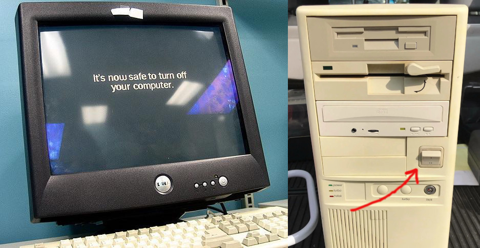

101.3 تغییر سطوح اجرا / اهداف بوت و خاموش کردن یا راه اندازی مجدد سیستم
وزن: 3
توضیحات: داوطلبان باید بتوانند سطح runlevel یا systemd boot هدف سیستم را مدیریت کنند. این هدف شامل تغییر به حالت تک کاربره و خاموش کردن یا راه اندازی مجدد سیستم است. کاندیداها باید بتوانند قبل از تغییر سطوح اجرا / اهداف بوت به کاربران هشدار دهند و فرآیندها را به درستی خاتمه دهند. این هدف همچنین شامل تنظیم سطح اجرای پیش فرض SysVinit یا هدف بوت سیستم است. همچنین شامل آگاهی از Upstart به عنوان جایگزینی برای SysVinit یا systemd است.
حوزه های دانش کلیدی:
- سطح اجرا یا هدف بوت پیش فرض را تنظیم کنید.
- تغییر بین سطوح اجرا / اهداف بوت از جمله حالت تک کاربره.
- خاموش کردن و راه اندازی مجدد از خط فرمان (Command Line).
- قبل از تغییر سطوح اجرا / اهداف بوت یا سایر رویدادهای مهم سیستم به کاربران هشدار دهید.
- به درستی فرآیندها را خاتمه دهید.
- آگاهی از acpi.
فهرستی جزئی از فایلها، اصطلاحات و ابزارهای استفاده شده در زیر آمده است:
/etc/inittab- خاموش شدن
- شروع
/etc/init.d/- telinit
- سیستم شده
- systemctl
/etc/systemd//usr/lib/systemd/- دیوار
سطوح اجرا
Runlevel ها تعریف می کنند که چه وظایفی را می توان در وضعیت فعلی (یا runlevel) یک سیستم لینوکس انجام داد. به آن به عنوان مراحل مختلف زنده بودن فکر کنید.
سیستم شده
در systemd، ما اهداف مختلفی داریم که گروههایی از خدمات هستند:
root@debian:~# systemctl list-units --type=target # On a Debian machine
UNIT LOAD ACTIVE SUB DESCRIPTION
---------------------------------------------------------
basic.target loaded active active Basic System
cryptsetup.target loaded active active Local Encrypted Volumes
getty.target loaded active active Login Prompts
graphical.target loaded active active Graphical Interface
local-fs-pre.target loaded active active Local File Systems (Pre)
local-fs.target loaded active active Local File Systems
multi-user.target loaded active active Multi-User System
network.target loaded active active Network
paths.target loaded active active Paths
remote-fs.target loaded active active Remote File Systems
slices.target loaded active active Slices
sockets.target loaded active active Sockets
sound.target loaded active active Sound Card
swap.target loaded active active Swap
sysinit.target loaded active active System Initialization
time-set.target loaded active active System Time Set
time-sync.target loaded active active System Time Synchronized
timers.target loaded active active Timers
و ما می توانیم پیش فرض را بررسی کنیم یا وضعیت هر یک از آنها را دریافت کنیم:
root@debian:~# systemctl get-default
graphical.target
root@debian:~# systemctl status multi-user.target
● multi-user.target - Multi-User System
Loaded: loaded (/lib/systemd/system/multi-user.target; static)
Active: active since Sat 2022-05-07 11:58:36 EDT; 4h 24min left
Docs: man:systemd.special(7)
همچنین امکان ایزوله هر یک از اهداف یا حرکت به دو هدف خاص نیز وجود دارد:
rescue: سیستمهای فایل محلی نصب شدهاند، بدون شبکه و فقط کاربر ریشه (حالت نگهداری)emergency: فقط سیستمفایل (Filesystem) ریشه و در حالت فقط خواندنی، بدون شبکه و فقط کاربر ریشه (حالت نگهداری)reboothalt: تمام فرآیندها را متوقف می کند و فعالیت های CPU را متوقف می کندpoweroff: مانند توقف است، اما سیگنال خاموش شدن ACPI را نیز ارسال می کند (بدون چراغ!)
# systemctl isolate emergency
Welcome to emergency mode! After logging in, type "journalctl -xb" to view system logs, "systemctl reboot" to reboot, "systemctl default" or ^D to try again to boot into default mode.
Give root password for maintenance
(or type Control-D to continue):
#
# systemctl is-system-running
maintenance
سطوح اجرا SysV
در SysV توانستیم مراحل مختلفی را تعریف کنیم. در یک سیستم مبتنی بر کلاه قرمزی معمولاً 7 مورد داشتیم:
- 0- خاموش شدن
- 1- حالت تک کاربره (بازیابی); S یا s نیز نامیده می شود
- 2- چند کاربر بدون شبکه
- 3- چند کاربره با شبکه
- 4- توسط ادمین سفارشی شود
- 5- چند کاربره با شبکه و گرافیک
- 6- راه اندازی مجدد
و در سیستم مبتنی بر دبیان داشتیم:
- 0- خاموش شدن
- 1- حالت تک کاربره
- 2- حالت چند کاربره با گرافیک
- 6- راه اندازی مجدد
بررسی وضعیت و تنظیم پیش فرض ها
با دستور runlevel می توانید سطح اجرای فعلی خود را بررسی کنید. از دوران SysV می آید اما هنوز روی سیستم های سیستمی کار می کند.
پیشفرض در /etc/inittab بود
grep "^id:" /etc/inittab #on initV systems
id:5:initdefault:
همچنین می توان آن را بر روی پارامترهای هسته grub انجام داد.
یا از دستور runlevel و telinit استفاده کنید.
# runlevel
N 3
# telinit 5
# runlevel
3 5
# init 0 # shutdown the system
میتوانید فایلها را در /etc/init.d و سطوح اجرا را در فهرستهای /etc/rc[0-6].d پیدا کنید که S نشاندهنده Start و K نشاندهنده Kill است.
در systemd، می توانید تنظیمات را در موارد زیر پیدا کنید:
/etc/systemd/usr/lib/systemd/
همانطور که در 101.2 بحث شد
/etc/inittab
با upstart و systemd جایگزین شده است اما هنوز بخشی از امتحان است.
#
# inittab This file describes how the INIT process should be set up
# the system in a certain run-level.
#
# Author: Miquel van Smoorenburg, <miquels@drinkel.nl.mugnet.org>
# Modified for RHS Linux by Marc Ewing and Donnie Barnes
#
# Default runlevel. The runlevels used by RHS are:
# 0 - halt (Do NOT set initdefault to this)
# 1 - Single-user mode
# 2 - Multiuser, without NFS (The same as 3, if you do not have networking)
# 3 - Full multiuser mode
# 4 - unused
# 5 - X11
# 6 - reboot (Do NOT set initdefault to this)
#
id:5:initdefault:
# System initialization.
si::sysinit:/etc/rc.d/rc.sysinit
l0:0:wait:/etc/rc.d/rc 0
l1:1:wait:/etc/rc.d/rc 1
l2:2:wait:/etc/rc.d/rc 2
l3:3:wait:/etc/rc.d/rc 3
l4:4:wait:/etc/rc.d/rc 4
l5:5:wait:/etc/rc.d/rc 5
l6:6:wait:/etc/rc.d/rc 6
# Trap CTRL-ALT-DELETE
ca::ctrlaltdel:/sbin/shutdown -t3 -r now
# When our UPS tells us power has failed, assume we have a few minutes
# of power left. Schedule a shutdown for 2 minutes from now.
# This does, of course, assume you have powered installed and your
# UPS connected and working correctly.
pf::powerfail:/sbin/shutdown -f -h +2 "Power Failure; System Shutting Down"
# If power was restored before the shutdown kicked in, cancel it.
pr:12345:powerokwait:/sbin/shutdown -c "Power Restored; Shutdown Cancelled"
# Run gettys in standard runlevels
1:2345:respawn:/sbin/mingetty tty1
2:2345:respawn:/sbin/mingetty tty2
3:2345:respawn:/sbin/mingetty tty3
4:2345:respawn:/sbin/mingetty tty4
5:2345:respawn:/sbin/mingetty tty5
6:2345:respawn:/sbin/mingetty tty6
# Run xdm in runlevel 5
x:5:respawn:/etc/X11/prefdm -nodaemon
این فرمت است:
id:runlevels:action:process
- شناسه: 2 یا 3 کاراکتر
- runlevels: این دستورات به کدام سطح اجرا اشاره دارد (خالی یعنی همه)
- اقدام: Respawn، صبر کنید، یک بار، initdefault (سطح اجرای پیشفرض همانطور که در بالا مشاهده میشود)، ctrlaltdel (با Ctrl+Alt+Delete چه کار کنیم؟
همه اسکریپت ها اینجا هستند:
ls -ltrh /etc/init.d
و start/stop در سطوح اجرا از این دایرکتوری (پوشه) ها کنترل می شود:
root@funlife:~# ls /etc/rc2.d/
توقف سیستم
روش ترجیحی برای خاموش کردن یا راهاندازی مجدد سیستم استفاده از دستور shutdown است که ابتدا یک پیام هشدار برای همه کاربرانی که وارد سیستم شدهاند ارسال میکند و هرگونه ورود غیر ریشهای دیگر را مسدود میکند. سپس به init سیگنال می دهد تا سطوح اجرا را تغییر دهد. سپس فرآیند init به همه فرآیندهای در حال اجرا یک سیگنال SIGTERM ارسال میکند و به آنها فرصتی میدهد تا دادهها را ذخیره کنند یا بهدرستی خاتمه دهند. پس از 1 دقیقه یا تاخیر دیگر، در صورت مشخص شدن، init یک سیگنال SIGKILL ارسال می کند تا به زور هر فرآیند باقی مانده را پایان دهد.
- پیشفرض یک تاخیر ۱ دقیقهای است و سپس به مرحله اجرا ۱ میرود
-hسیستم را متوقف می کند-rسیستم را راه اندازی مجدد می کند- زمان
hh:mmیا n (دقیقه) یا اکنون است - هر چیزی که اضافه کنید، با استفاده از دستور
wallبرای کاربرانی که وارد سیستم شده اند پخش می شود. - اگر دستور اجرا می شود، ctrl+c یا
shutdown -cآن را لغو می کند
shutdown -r 60 Reloading updated kernel
برای کاربران پیشرفته تر:
- -t60 بین SIGTERM و SIGKILL 60 ثانیه به تاخیر می افتد
- اگر خاموش کردن را لغو کنید، کاربران اخبار را دریافت خواهند کرد
توقف، راه اندازی مجدد، و خاموش کردن
- دستور
haltسیستم را متوقف می کند. - دستور
poweroffسیستم را متوقف می کند و سپس سعی می کند آن را خاموش کند. - دستور
rebootسیستم را متوقف می کند و سپس آن را راه اندازی مجدد می کند.
در اکثر توزیعها، اینها پیوندهای نمادین به ابزار systemctl هستند
پیکربندی پیشرفته و رابط برق (ACPI)
ACPI یک استاندارد باز ارائه میکند که سیستمعاملها میتوانند از آن برای کشف و پیکربندی اجزای سختافزار کامپیوتر، انجام مدیریت انرژی (مانند قرار دادن اجزای سختافزاری استفادهنشده به حالت خواب)، انجام پیکربندی خودکار (مانند Plug and Play و Hot Swapping) و نظارت بر وضعیت استفاده کنند.
این زیرسیستم اجازه می دهد تا دستورات سیستم عامل (مانند خاموش کردن) سیگنال هایی را به رایانه ارسال کند که منجر به خاموش شدن کل رایانه شخصی می شود. در زمانهای قدیم ما این صفحهکلیدهای مکانیکی را برای خاموش کردن واقعی پس از خاموش شدن سیستم عامل داشتیم و به ما میگفتیم که "خاموش کردن رایانه امن نیست".

اطلاع رسانی به کاربران
خوب است که مطلع شوید! به خصوص اگر سیستم در حال سقوط باشد. به خصوص در سرور اشتراکی. لینوکس ابزارهای مختلفی برای مدیران سیستم دارد تا به کاربران خود اطلاع دهند:
wall: ارسال پیام های دیواری به کاربرانی که وارد سیستم شده اند/etc/issue: متنی که باید در ورود به ترمینال tty نمایش داده شود (قبل از ورود به سیستم)/etc/issue.net: متنی که باید در ورودی های ترمینال راه دور نمایش داده شود (قبل از ورود به سیستم)/etc/motd: پیام روز (پس از ورود به سیستم). برخی از شرکتها متنهای «اگر مجاز نیستید وارد نشوید» را به دلایل قانونی در اینجا اضافه میکنند.mesg: اگر میخواهید پیامهای دیواری دریافت کنید یا نه، فرمان را کنترل میکند. می توانیدmesg nرا انجام دهید وwho -Tوضعیت پیام را نشان می دهد. توجه داشته باشید که پیام های دیواریshutdownبه وضعیتmesgاحترام نمی گذارند
systemctl پیام های دیواری را برای موارد اضطراری، توقف، خاموش کردن، راه اندازی مجدد و نجات ارسال می کند.